前言
全球受到肺炎疫情影響，出國旅行變成要付出時間隔離及金錢代價，因此在臺灣造就國內旅遊的熱潮，讓已經很搶手山屋或營地申請變的更加熱門，而三大國家公園申請案件大大暴增，進而讓一日行程越來越普遍。
完成一日行程的喜悅或初次在山頂的震撼，同樣也都會想分享給朋友或PO文於各網站，社群團體裡，訊息流通便利，看到美景就想跟風的網路效應很容易形成，往往讓很多未評估本身能力就衝鋒陷陣的百岳單日者，暴露在高風險裡的行程中，這篇就來談談有哪些路線供選擇以及該如何讓自己安全的完成。
初階路線
很多人有單日行程經驗，從郊山，中級山以及高山，因為考量到路程/住宿/假期剛好適合當天往返，但是這裡要談的不是沒經驗的一般民眾，而是要有基本爬山經驗，體能有經過訓練，基本裝備要有，會看軌跡/天氣預報及安全知識都有具備一定水準的能力具備者，安全永遠是擺在最優先考量，因此門檻有如百岳分級制度，讓初學者慢慢成長為-百岳單日者-的指標，下列列舉一些條件及路線供參考，考量條件如下：
1.十二小時內完成，去回程大致路徑相同，安全考量及後續撤退，且不需異地接駁
2.總距離不超過半程馬拉松距離21公里97.5米 (熱門景點：一日玉山主峰距離超過為特例)
3.耗力指數50以下，距離(公里)+爬升(公尺)/100所計算出的數值
4.總爬升高度不超過2500公尺
5.可通過合法申請國家公園入園一日行程
PS.所有單日行程一定要設定停損點，當預計時間，未抵達到自己設定該到的地點，就必須嚴格執行撤退。
百岳單日行程推薦 [初級九段線]
- 郡大山來回：距離9.35公里/爬升628公尺/耗力指數：15.63
- 羊頭山來回：距離7.13公里/爬升1124公尺/耗力指數：18.37
- 合歡北峰/合歡西峰來回：距離13.75公里/爬升1269公尺/耗力指數：26.44
- 西巒大山來回：距離13.14公里/爬升1623公尺/耗力指數：29.37
- 屏風山來回(新路)：距離15.73公里/爬升2012公尺/耗力指數：35.85
- 桃山/喀拉業來回：距離18.63公里/爬升1986公尺/耗力指數：38.49
- 玉山來回：距離24.48公里/爬升1571公尺/耗力指數：40.19
- 白姑大山來回：距離18.13公里/爬升2224公尺/耗力指數：40.37
- 奇萊主峰/奇萊北峰來回：距離21.62公里/爬升2014公尺/耗力指數：41.76
當「初級九段線」打好基礎是很重要的，腿部/膝蓋附近肌肉，及耐力有基礎上的強度，可輕鬆在十二小時內完成時，表示該進階到下個層級，往中階路線前進。 [人因夢想而偉大，完成初級九段線讓單攻不會變笑話]
進階路線
來到這個層級，那表示應該對百岳越野有一定的興趣或有一群志同道合朋友的推坑，能入坑又能優雅轉身跳出來的最重要的條件還是安全第一，但是很多人會抱著非登頂不可的心態，導致風險增高，因此建議領隊或規劃行程的人可設定關門時間點，第二項該考慮的要點就是配速，從[初級九段線]可大約捉一下自己行進速度，比如爬坡一小時可走多遠，下坡跑起來有幾分速，讓單日行程以個人最輕鬆的方式完成，讓自己在這領域成長茁壯.接下是這階段的條件及參考路線，考量條件如下：
1.十八小時內完成
2.總距離超過半程馬拉松距離21公里97.5米
3.耗力指數50以上，距離(公里)+爬升(公尺)/100所計算出的數值
4.總爬升高度超過2500公尺
5.可通過合法申請國家公園入園一日行程
PS.爬山不只有腳力的訓練，更重要的是手腳的協調性，因此手臂的肌肉也要配合跟上來，因此很多地型需要拉繩或攀爬的手勁。
百岳單日行程推薦[進級の巨人十二試煉]
- 戒茂斯上嘉明湖(回向陽管制站)：距離25.88公里/爬升2581公尺/耗力指數：51.69
- 卓社大山來回：距離25.62公里/爬升2836公尺/耗力指數：53.98
- 武陵四秀(桃山到品田山)：距離25.48公里/爬升2981公尺/耗力指數：55.29
- 大劍山來回：距離32.42公里/爬升2647公尺/耗力指數：58.89
- 小O聖(武陵山莊進，下水管路出雪山登山口)：距離29.58公里/爬升2928公尺/耗力指數：58.86
- 屏風山上奇萊北壁(滑雪山莊出)：距離30.48公里/爬升2872公尺/耗力指數：59.20
- 奇萊連峰(屯原進，滑雪山莊出)：距離33.42公里/爬升2679公尺/耗力指數：60.21
- 雪山東峰/雪山主峰/雪山北峰(下水源路)：距離29.89公里/爬升3479公尺/耗力指數：64.68
- 雪劍線(雪山登山進/鐵閘門出)：距離38.04公里/爬升3013公尺/耗力指數：68.17
- 八通關古道上玉山主峰(至東埔停車場)：距離40.64公里/爬升3192公尺/耗力指數：72.56
- 玉山前五峰(東埔停車場來回)：距離40.21公里/爬升3123公尺/耗力指數：71.44
- 南湖大山來回：距離37.27公里/爬升3578公尺/耗力指數：73.05
當完成“進級の巨人十二試煉”後，表示對百岳地型的經驗值以及身體的能耐達到比一般平常人水平還要高一些，當你可以輕鬆在十八小時內完成所有試煉時，接下來的自我超越更能為周遭同好所期待。[沒有期待，沒有傷害；十二試煉，無所不在]
高階路線
接下來的路線對一般人來說，完成的了很多都會被叫為神人，但人外有人，天外有天，任何上山的行程，越要有謙卑的心態對待所有一切。天時：好天氣首要條件；地利：路線最好親自走過以及提早規劃做好準備；人合：找想法適合的人選以及能力相當的隊友一起努力，可以相互鼓勵，心態正確才能產生正向作用，讓行程安全且順利的完成。別忘了，人是去親近山林而不是去征服，因此我會把接下來這些路線稱作障礙，但此先說明此障礙是地型上的障礙，跟一般越野比賽所要過的地型更加的變化多端，因為都會往三千公尺以上的目標前進，天氣一旦有變，進而可能會影響到地型無法通過或人的意志不夠堅強都很容易增加危險因素，所以我把接下來的稱為[高...單..百越野四大障礙]，也許有更利害的單攻者完成強度更強的路線，但設定為障礙並不是為了築起那不可完成的高牆，而是讓喜好或有興趣的人有更高的努力目標，但為了安全起見，還是有設定如下條件：
1.二十四小小時內完成 ，去回程大致路徑相同，安全考量及後續撤退，且不需異地接駁
2.總距離超過全程馬拉松距離42公里195米
3.耗力指數80以上，距離(公里)+爬升(公尺)/100所計算出的數值
4.總爬升高度超過4000公尺
5.可通過合法申請國家公園入園一日行程
百岳單日行程推薦 [高級單日百岳越野四大障礙：簡稱 “高..單..百越野四大障礙”]
- 中央尖山 (來回馬路台七線50K處)：太魯閣國家公園申請 (入選原因：寶島第一尖之稱)，高達3705公尺，位於中央山脈北段，山體呈金字塔形，有寶島第一尖之稱。
障礙說明：需走溪谷涉水，中央尖溪山屋後有一段需上攀，沒多久又要洗澡攀過石頭，到中央尖鞍部之前幾百公尺碎石坡抖坡一直上，回程過了香菇寮要一直抖上去，接著溪谷地形直上木桿鞍部。.
距離44.39km/爬升4272m/耗力指數：87.11
- 馬比杉山 (來回馬路台七線50K處)：太魯閣國家公園申請 (入選原因：南湖群峰最遠一座)，高達3211公尺，屬於中央山脈。馬比杉山北接南湖大山東峰、南連巴巴山等山。
障礙說明：先過此行程相對簡單的五岩峰，再從南湖圈谷下切，而圈谷回程會抖上還回，再來到南湖山屋後面上到南湖東峰，往陶塞峰方向沿途會經過碎石以及岩石地形（此時應該天還是暗的或想睡覺），然後切到溪谷叉路鞍部，接著往標示1.7K方向前進，但1.7K會感覺走很久，並經過茂密箭竹林，通常箭竹不潮溼的機會不多，所以抵達馬比後又回來很容易失溫，然後回到鞍部走河床，雖然是河床但不一定有水，所以水要在南湖山屋後方水源區取足，回到馬比回程的路上，要從河床往上一直走到南湖主東叉路，接著可跑性高的一段到南湖山屋，然後回程重覆下坡變上坡/上坡變可跑性的路段的戲碼。
距離47.40km/爬升4131m/耗力指數：88.71
- 大小劍 (來回仁壽橋停車場)：雪霸國家公園申請 (入選原因：劍山為雪山山脈最不容易親近的一座)
大劍山 - 又名巴多瓦諾敏山，雪霸國家公園中部，標高3，594公尺
佳陽山 - 高達3，314公尺，屬於雪山山脈。佳陽山南方有劍山，北邊連接大劍山。其特色為三角形的山形，東側有著大崩璧，而其崩璧土石堆積成了佳陽沖積扇。
劍山 - 又名小劍山，高達3，253公尺，屬於雪山山脈。劍山附近接連佳陽山。其特色為狀似寶劍。
障礙說明：林道先來個高繞熱身，然後到登山口吃主菜天梯，但天梯回程下到厭世，比較有地形在布伏奇寒山到大劍山攀爬岩石地形回程會走到腳軟，因為小劍要一直下相對回程就一直上，而這段在森林裡的箭竹茂密，有露水或雨水很容易失溫。
距離48.33km/爬升4135m/耗力指數：89.68
- 八大秀 (來回東埔登山口)：玉山國家公園申請 (入選原因：沿途會經過八通關古道，又有中央山脈最高峰)
八通關山 - 高達3，335公尺，屬於玉山山脈。山峰尖銳多崖壁峻坡，亦屬百岳中八銳峰之一，因為山下八通關古道聞名。
大水窟山 - 標高3，642公尺，排名第13。，屬於中央山脈。大水窟山東南方有大水窟湖泊（海拔高度約3，280公尺），南方有南大水窟山（標高3，381公尺。非百岳），北邊連接秀姑巒山。
秀姑巒山 - 處於台灣中央山脈中段最高山彙的中心，標高3，805公尺，為中央山脈最高峰。
障礙說明：基本上跟前面三座地形比，地形相對沒那樣複雜主要是繞過崩塌，一開始八通關古道18K在那擺著，但要在天黑跑起來也難，觀高後的高繞點先就慢慢抖上，順便撿個八通關大山西峰，以及到八通關山看日出跟玉山，接下來可跑性高的路段，直奔鞍部不用三十分接八通關古道，中央金到白洋金碰到一點點破碎地形，接著秀姑坪一直往上到秀姑巒山，回程一樣可跑性高，直到回秀姑坪，接著大水窟山來回後就感覺沒力，因中途沒水，所以要在一開始離開白洋金礦山屋就把水裝滿，好天氣就擔心水不夠，天氣差就容易吹風吹到飽，回程經過八通關大草原，天色已晚決定高繞避開大坍塌地形，花了快1小時繞回觀高，然後就開始一直跑跑跑，中途還有大石頭滾下來嚇死寶寶，砸中鐵橋上面滾下山，因為古道潮濕又碰的赤尾青竹絲，像極了手遊Temple run。
距離63.01km/爬升4196m/耗力指數：104.97
完成任何一項活動時沒有產生任何的身體或心靈的傷害，才能讓此活動對人體健康有益，別讓運動本末倒置，循序漸進式的完成讓自己更加的強大，每段過程中，會得很多人的幫助以及結識同好者，也許有一天需要你的幫助時，你也可以即時伸出援手，進而降低山難的發生率，而不是單單在比速度多快/時間多短完成。[四大皆空，出神入化]
結語
臺灣超過三千公尺的高山大約二百六十八座，真的要安排百岳一日行程的路線變化及搭配組合根本就是眼花繚亂，因此先基礎的傳統百岳路線為框架做為微調整，然而在越野或爬山界內很多低調高手，並且有更遠大的目標，推動臺灣越野的進步，讓有興趣的參與者，能夠安全的在山林中奔跑，用良性循環的方式，讓臺灣的越野活動越來越安全及強大。
參考資料
耗力指數參考越野ITRA Points：網站
單攻行不行Way to Go Fastpacking社團：資料庫
個人單日百岳簡歷：
- 2013/08/11畢祿羊頭山-8.2K紮營地 (約12小時)，同伴：王天利/李榮忠/吳美枝/呂邵義/Roger Lee/Lilian Chao/蔡晨錚/許大飛/Peter Huang/Lenny Chien/JD Chen/Jessica Chang/趙學文/張松桂…等16人
- 2016/04/09 屏風山 (15小時45分)，同伴：楊必嘉
- 2017/05/07 池有山/品田山 (16小時10分)，同伴：Miffy Lin
- 2017/08/05 西巒大山 (8小時25分)，同伴：阿牛曾/張國偉/黃小儀/Frannie Chen/Joy Yuan/陳玲…等12人
- 2017/08/26 桃山/喀拉業 (9小時45分)，同伴：劉柏廷…等2人
- 2017/08/27 志佳陽大山 (9小時36分)，同伴：劉柏廷…等5人
- 2017/09/09 小O聖 (16小時10分)，同伴：Benson Liu/Saba Sung/陳家文
- 2017/10/21 郡大山 (5小時58分)，同伴：蘇蘇/Ting Ting/劉柏廷/江溪/劉千聿/阿志/吳尚柔/立偉…等11人
- 2017/10/22 西巒大山 (6小時9分)，同伴：蘇蘇/Ting Ting/劉柏廷/江溪/劉千聿/阿志/吳尚柔/立偉…等11人
- 2018/02/04 北大武 (12小時17分)，同伴：蘇蘇/Saba Sung/陳家文/江溪/Miffy Lin…等9人
- 2018/11/03 南湖大山 (14小時28分)，同伴：Alexander Lee/AC Liu(康熙)/Saba Sung
- 2018/11/16 合歡北峰西峰 (6小時50分)，同伴：Grace Chang/Che-Wei Liang
- 2019/10/26 郡大山 (6小時30分)，同伴：Jethro Chin/劉妍伶/Grace Chang/Che-Wei Liang/李曜丞/Yin Chiang/Candos Huang/許大飛…等10人
- 2019/10/27 西巒大山 (11小時19分)，同伴：Jethro Chin/劉妍伶/Grace Chang/Che-Wei Liang/李曜丞/ Yin Chiang /Candos Huang/許大飛…等10人
- 2020/05/31 屏風山 (8小時45分)，同伴：許雷力/Tom Lin/Jih-Sheng Liao (小廖師兄)/ AC Liu(康熙)/楊智閔
- 2020/06/13 大小劍 (22小時33分)，同伴：Alexander Lee/AC Liu(康熙)
- 2020/07/04 馬比杉山 (22小時13分)，同伴：Alexander Lee/AC Liu(康熙)
- 2020/07/11 中央尖山 (20小時55分)，同伴：許雷力/Tom Lin/Jih-Sheng Liao (小廖師兄)
- 2020/07/18 八大秀 (23小時15分)，同伴：Alexander Lee/AC Liu(康熙)
- 2020/08/08 武陵四秀+O聖-桃山登山口進/雪山登山口 (3小時50分+17小時41分=21小時31分)，同伴：Alexander Lee
- 2020/08/15 雪山東峰/主峰/南峰+志佳陽大山+馬武霸 (15小時37分)，同伴：許雷力/Tom Lin/巧巧玲/卓育群/楊智閔/楊智閔女友
- 2020/09/04 八通關上玉山 (14小時)， 同伴：Tom Lin/Yeaer Er/卓育群/Alexander Lee/AC Liu(康熙)/Jih-Sheng Liao (小廖師兄)/林勇德
- 2020/12/06 奇萊南峰 南華山(能高北峰)下光被八表 (11小時58分)， 同伴：千瑩/冠賢/妍妍/俊億/臺群
- 2020/12/26 黑黑谷治茆連走+巒安堂上 西巒大山 出人倫林道 (15小時13分)， 同伴：許雷力/Tom Lin/ Yeaer Er /Jih-Sheng Liao (小廖師兄)/ AC Liu(康熙)/Jack(紹鈞)
- 2021/02/27 奇萊北峰+奇萊主峰 (16小時9分)， 同伴：妍妍
- 2021/04/18 志佳陽大山+雪山主峰+大劍山 (15小時47分)， 同伴：Harry， 志偉， ShihNi_Hsu
| 百岳單攻 [高階單攻越野四大障礙]申請記錄 | ||
| 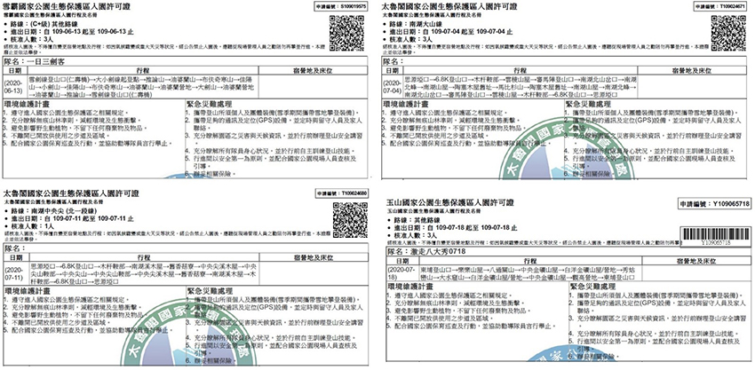 | ||
| [2020/04/11能高越嶺古道全段-天長隧道，往後的日子真正的入坑百岳單攻越野] | ||
| 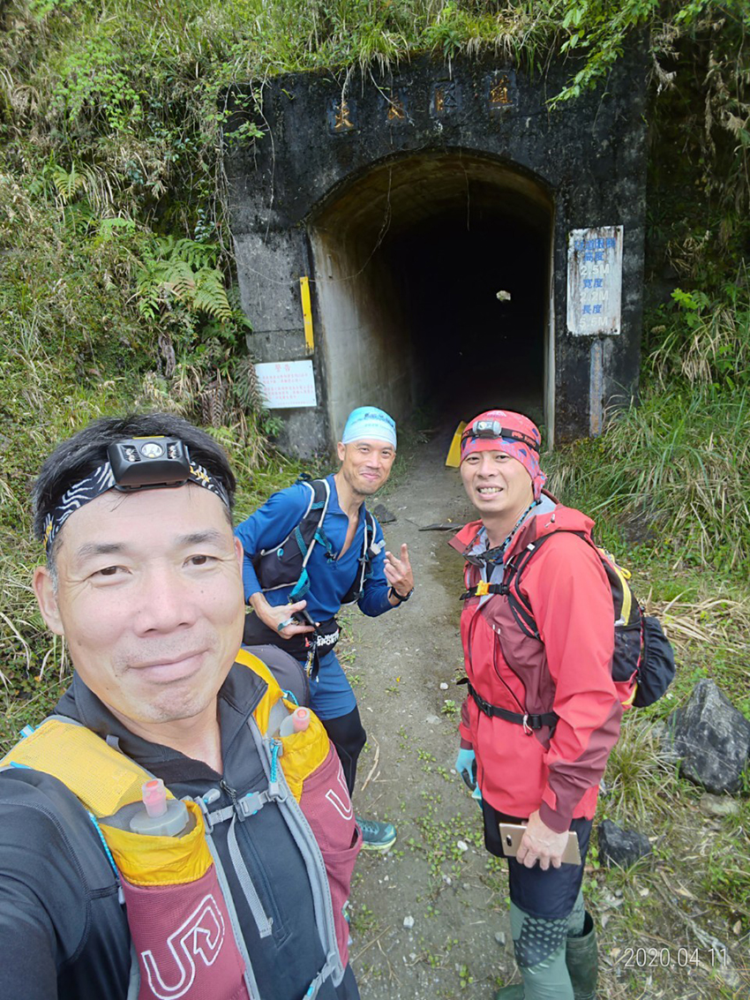 | ||
| [2020/06/13 成功取小劍] | ||
| 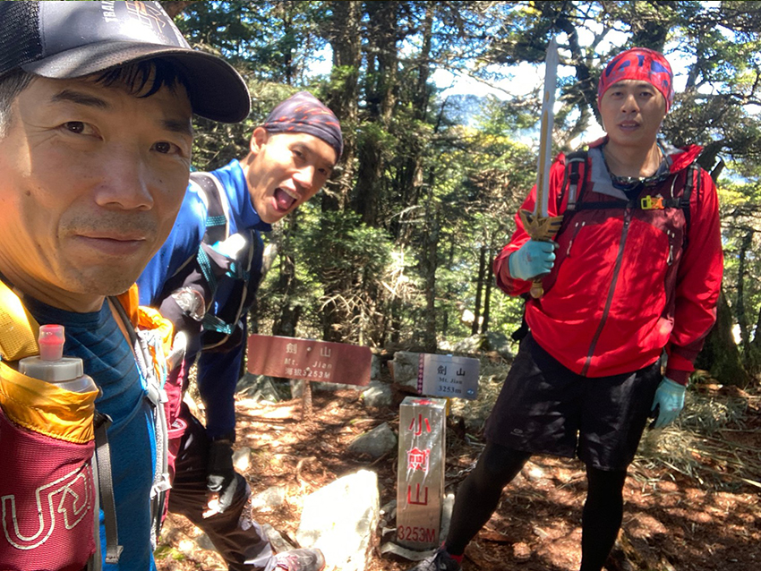 | ||
| [2020/07/04 馬比杉山去程之南湖北峰] | ||
| 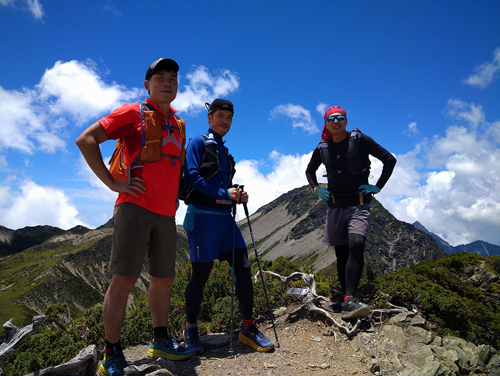 | ||
| [2020/07/11 中央尖山回程之中央尖溪木屋] | ||
| 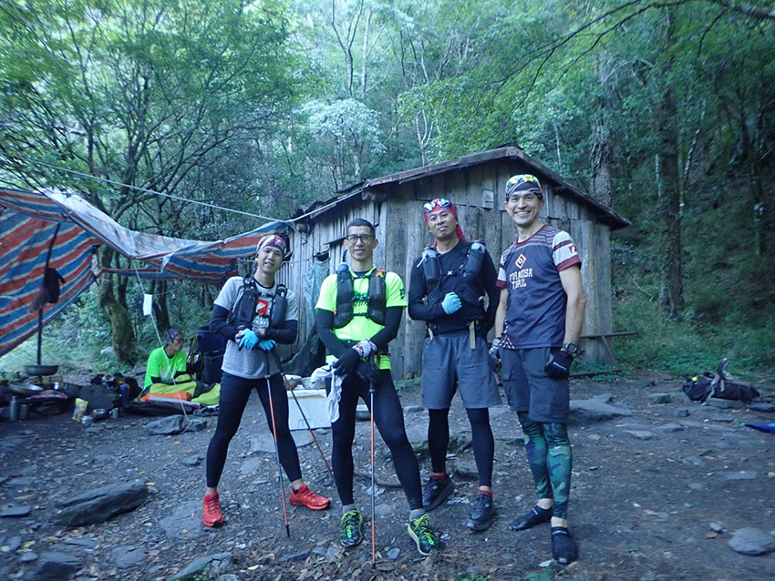 | ||
| [2020/07/18 八大秀] | ||
| 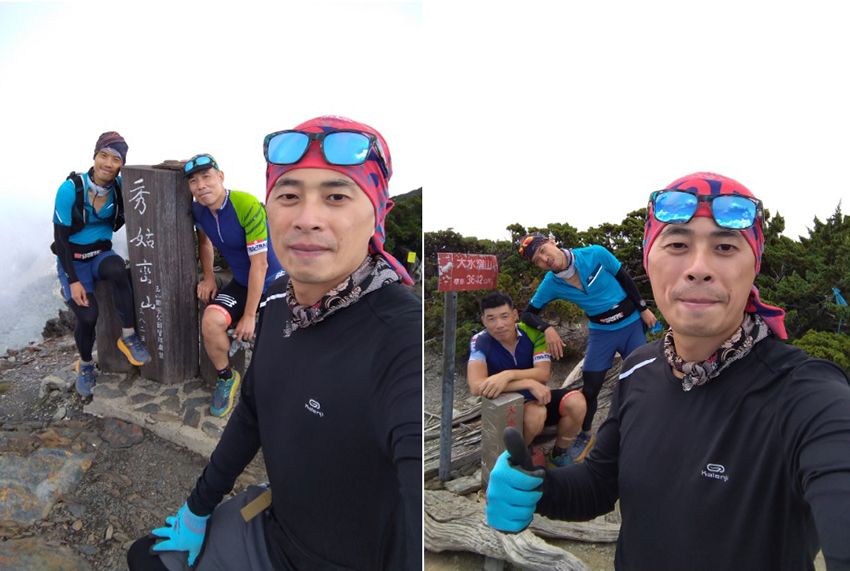 | ||
| [2020/08/08 武陵四秀+O聖，下斷崖/夢幻山屋/吃稜角] | ||
| 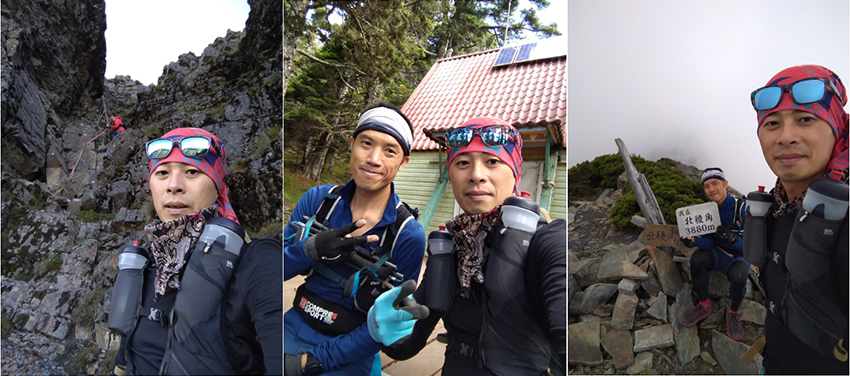 | ||
| [2020/08/15 雪志馬之雪山南峰] | ||
| 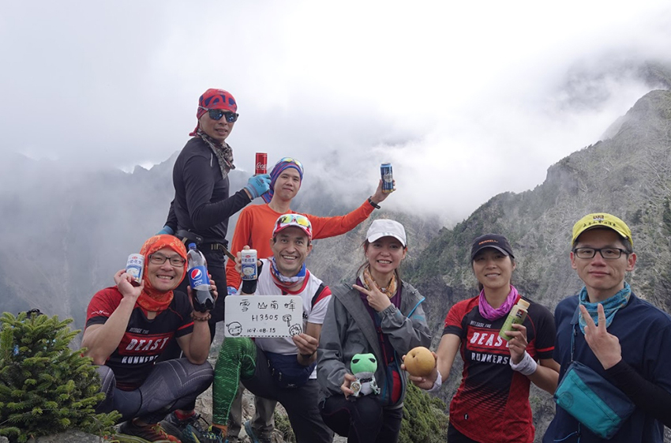 | ||
| [2020/08/15 雪志馬之馬武霸山] | ||
| 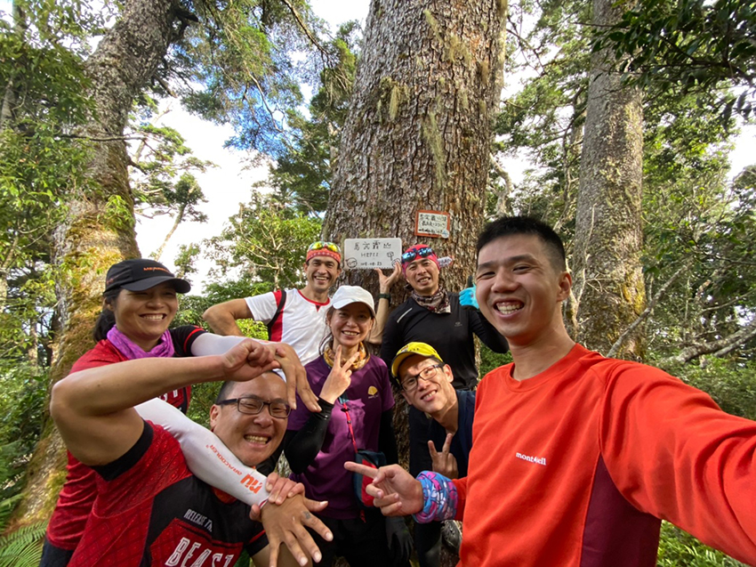 | ||
| [2020/08/15 雪志馬之馬武霸山基點] | ||
| 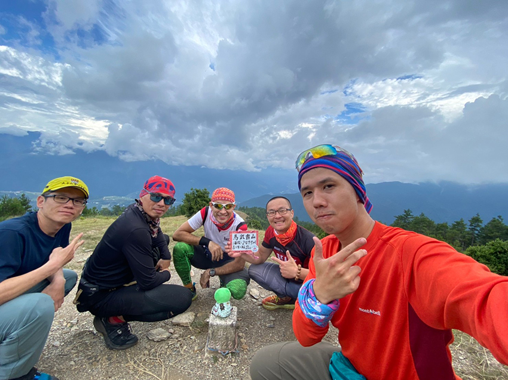 | ||
| [2020/09/04 八通關上玉山，前往荖濃溪營地] | ||
| 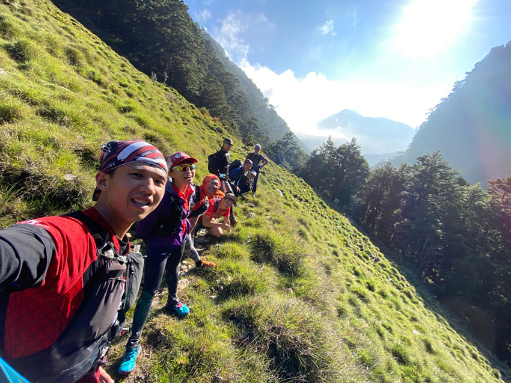 | ||
| [2020/09/04 八通關上玉山，玉山合照] | ||
| 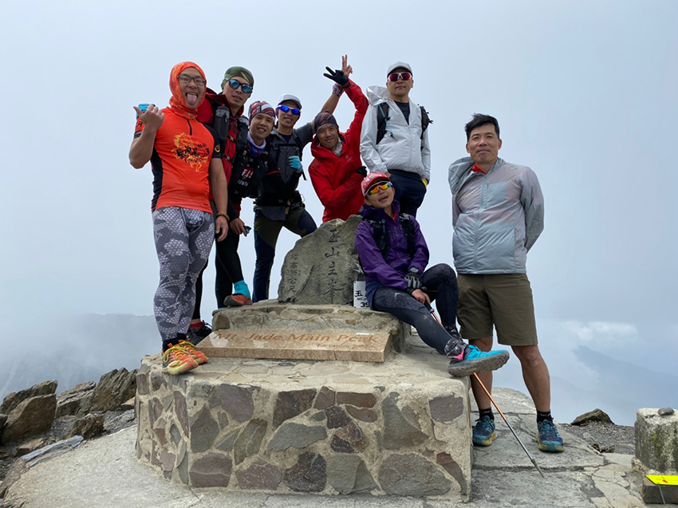 | ||
| [2020/12/26 巒安堂大合照] | ||
| 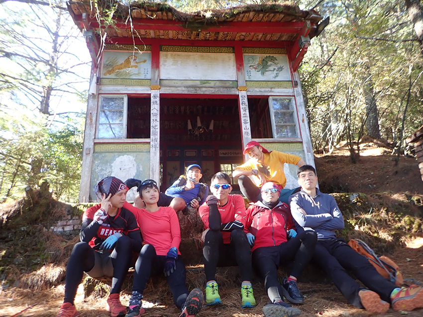 | ||